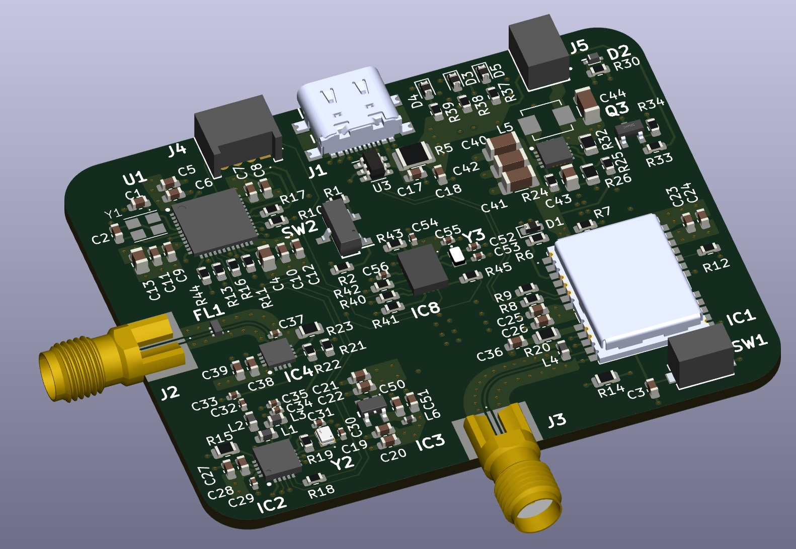
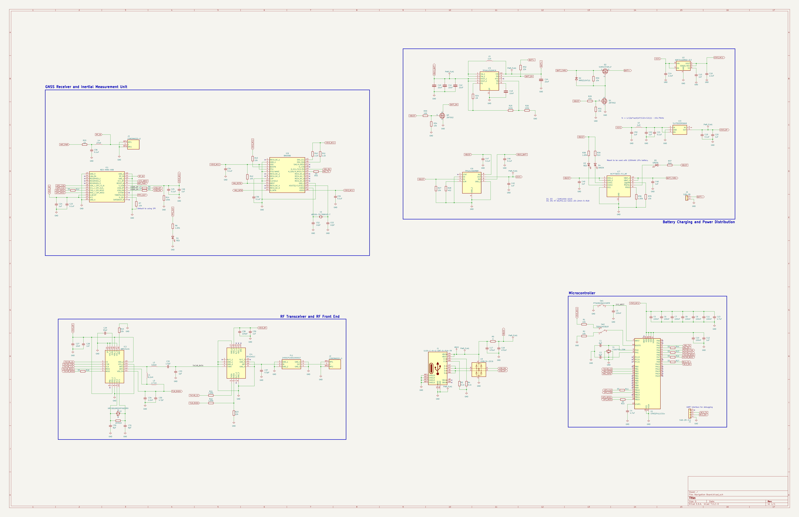
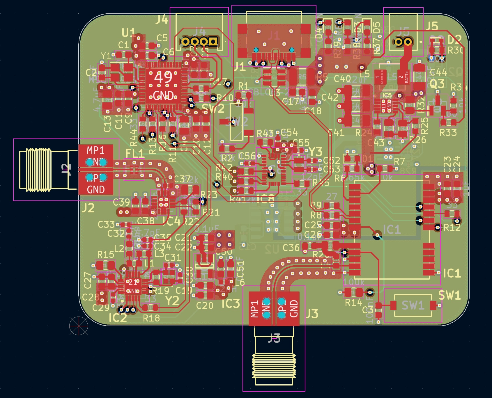
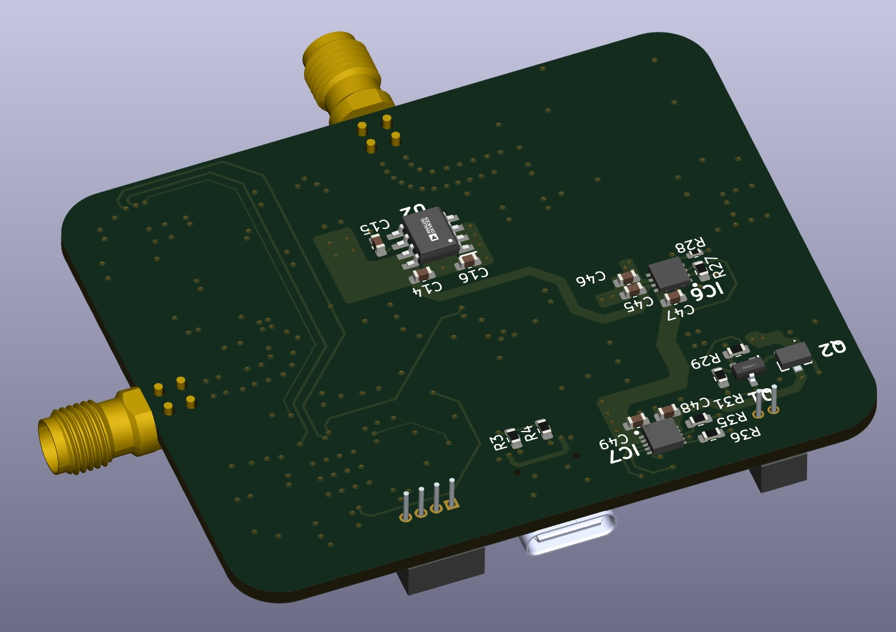

Embedded Systems · Sensor Fusion · RF
A custom 6-layer navigation board integrating GNSS, inertial sensing, and wireless communication into a compact embedded system. The board estimates real-time vehicle attitude using a Kalman filter that fuses GPS and IMU data, transmitting results wirelessly to a host computer for visualization.

At a Glance
Data Flow
Hardware + Firmware
This board was designed as a dedicated navigation and state estimation platform. The hardware is complete and functional, integrating all sensing, processing, and communication subsystems onto a single PCB.
The design centers around the STM32F411 MCU, which interfaces with the NEO-M9N GNSS receiver over UART for global positioning, and a 9DOF IMU over SPI/I2C for high-rate motion sensing. The nRF24L01 provides a low-latency 2.4 GHz RF link to stream processed state estimates to an external computer.
The board is powered by a single-cell LiPo battery with onboard USB-C charging circuitry. Independent regulation stages supply stable rails for the RF front-end, digital logic, and analog sensing paths, minimising noise coupling into sensitive IMU measurements.
A 6-layer stackup was chosen to provide controlled impedance for RF and GNSS antenna traces, solid ground referencing across all layers, and clean power distribution. Dedicated power and ground planes minimise EMI and improve signal integrity throughout.
Full Circuit Diagram

RF, digital, and power sections are grouped accordingly. Separate power supply for RF components for better isolation form noise.
KiCAD Design Files


Layer Details — Design Spreadsheet
Kalman Filter Implementation
The hardware platform is complete. The main focus moving forward is implementing a robust Kalman filter for sensor fusion and the accompanying host-side visualization pipeline.